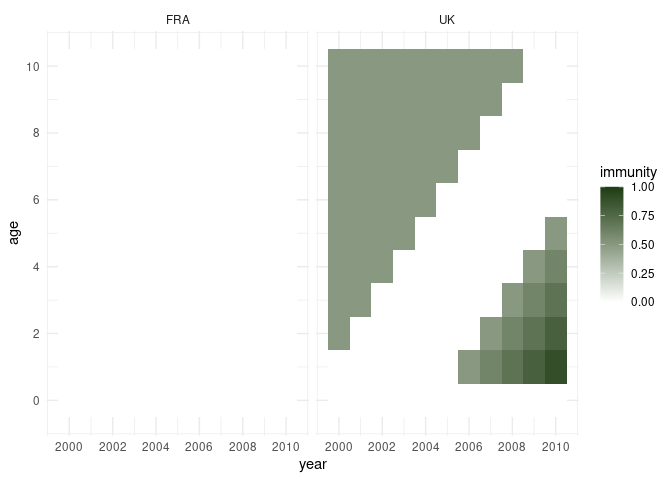
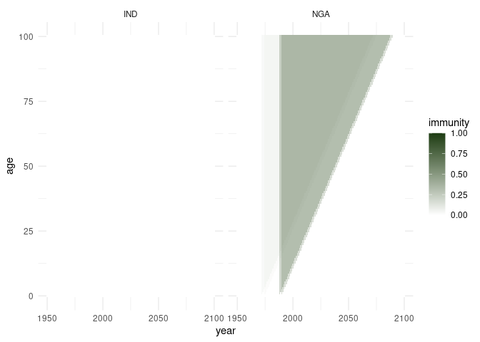
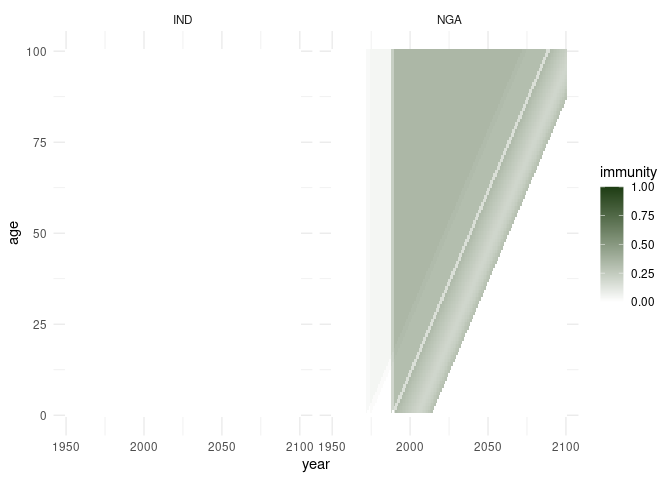
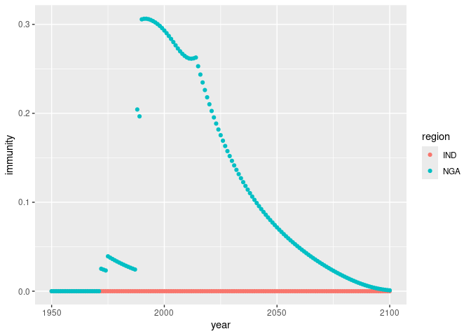

POPulation IMmunity
This repository contains functions to run a demographic model of vaccine exposure over time, tracking the vaccine-derived immunity by age through time, following implementation of one or more vaccination activities that can target the population as a whole or selectively target specific age groups.
Installation
You can install the development version of popim from GitHub with:
# install.packages("devtools")
devtools::install_github("mrc-ide/popim")Example 1
This package defines an S3 class popim_population which is a dataframe with at least the columns year, age, cohort (the year of birth for the individuals tracked in this row), and immunity (as a proportion of this cohort). Year, age and cohort are tracked as annual time steps and age groups.
A basic, totally naive population dataframe can be setup using the function popim_population():
library(popim)
pop <- popim_population(region = c("UK", "FRA"), year_min = 2000, year_max = 2010,
age_min = 0, age_max = 10)
dim(pop)
#> [1] 242 6
head(pop)
#> region year age cohort immunity pop_size
#> 1 UK 2000 0 2000 0 NA
#> 2 FRA 2000 0 2000 0 NA
#> 3 UK 2001 0 2001 0 NA
#> 4 FRA 2001 0 2001 0 NA
#> 5 UK 2002 0 2002 0 NA
#> 6 FRA 2002 0 2002 0 NAThis dataframe has 242 columns (2 regions x 11 age groups 0 - 10 x 11 years 2000 - 2020).
Next, we read in a file containing some vaccination activites into an object of the class popim_vacc_activities.
vacc <- read_vacc_activities("inst/extdata/vacc_activities.csv")
vacc
#> region year age_first age_last coverage doses targeting
#> 1 UK 1998 0 10 0.50 NA random
#> 2 UK 2005 0 0 0.50 NA random
#> 3 UK 2006 0 0 0.60 NA random
#> 4 UK 2007 0 0 0.70 NA random
#> 5 UK 2008 0 0 0.80 NA random
#> 6 UK 2009 0 0 0.90 NA random
#> 7 UK 2010 0 0 0.95 NA randomAll vaccination activities target the UK. The first is a campaign targeting all age groups of our dummy population, which took place 2 years before the dawn of time. As immunity is assumed not to wane, the effects of this are still there, and therefore the functions here keep track of this. The remaining vaccination activities are routine vaccination of infants (restricted to age 0) with an increasing population of the target cohort to be vaccinated.
We now apply these vaccination activities sequentially to the population using the function apply_vaccs().
pop <- apply_vacc(pop, vacc)The resulting vaccine-derived immunity of the population can be visualised with the function plot_immunity(). This is based on ggplot2, and the returned graph object can be further modified - here in order to achieve tick marks that suit the data better.
library(ggplot2) ## needed to amend the plot returned from plot_population()
g <- plot_immunity(pop)
g + scale_x_continuous(breaks = seq(2000, 2010, by = 2)) +
scale_y_continuous(breaks = seq(0, 10, by = 2))
As all vaccination activities target the “UK”, the population in “FRA” has no immunity at all. In the “UK”, the top left corner it shows the immunity remaining in the older age groups from the initial campaign, while the infant vaccination from 2005 onwards results in immuity in the lower right corner - and the increasing coverage highlights how cohorts age through time and therefore move through the plot in a diagonal fashion.
Example 2
A more realistic scenario is to read in some real population data to set up the popim_population, and then apply some vaccination activities to this. Information on the vaccination activities may be given in coverage (typical for routine infant vaccination) or doses (typical for mass vaccination campaigns).
pop <- read_popim_pop(file = "inst/extdata/pop_sample.csv")We have read in population data for India (“IND”) and Nigeria (“NGA”) for the period from 1950 to 2100. The age range covered is 0 to 100 year, and the population is set up as fully unvaccinated:
dim(pop)
#> [1] 30502 6
head(pop)
#> region year age cohort immunity pop_size
#> 1 IND 1950 0 1950 0 13505495
#> 2 NGA 1950 0 1950 0 1438816
#> 3 IND 1951 0 1951 0 13860960
#> 4 NGA 1951 0 1951 0 1505894
#> 5 IND 1952 0 1952 0 14233779
#> 6 NGA 1952 0 1952 0 1535000
table(pop$region)
#>
#> IND NGA
#> 15251 15251
range(pop$year)
#> [1] 1950 2100
range(pop$age)
#> [1] 0 100Now we read in some vaccination activities for Nigeria: some campaigns targeting all age groups, and some routine vaccination targeting only infants:
campaigns <- read_vacc_activities("inst/extdata/vacc_campaigns_NGA.csv")
campaigns
#> region year age_first age_last coverage doses targeting
#> 1 NGA 1971 0 100 NA 1496674 random
#> 2 NGA 1974 0 100 NA 1100000 random
#> 3 NGA 1987 0 100 NA 17000000 random
#> 4 NGA 1989 0 100 NA 14000000 random
routine <- read_vacc_activities("inst/extdata/vacc_routine_NGA.csv")
routine
#> region year age_first age_last coverage doses targeting
#> 1 NGA 1990 0 0 0.3308515 NA random
#> 2 NGA 1991 0 0 0.3181156 NA random
#> 3 NGA 1992 0 0 0.3062463 NA random
#> 4 NGA 1993 0 0 0.2949784 NA random
#> 5 NGA 1994 0 0 0.2847963 NA random
#> 6 NGA 1995 0 0 0.2748206 NA random
#> 7 NGA 1996 0 0 0.2646241 NA random
#> 8 NGA 1997 0 0 0.2548750 NA random
#> 9 NGA 1998 0 0 0.2455467 NA random
#> 10 NGA 1999 0 0 0.2366186 NA random
#> 11 NGA 2000 0 0 0.2280252 NA random
#> 12 NGA 2001 0 0 0.2191378 NA random
#> 13 NGA 2002 0 0 0.2106511 NA random
#> 14 NGA 2003 0 0 0.2025363 NA random
#> 15 NGA 2004 0 0 0.1947333 NA random
#> 16 NGA 2005 0 0 0.1951376 NA random
#> 17 NGA 2006 0 0 0.2006093 NA random
#> 18 NGA 2007 0 0 0.2089055 NA random
#> 19 NGA 2008 0 0 0.2202815 NA random
#> 20 NGA 2009 0 0 0.2297419 NA random
#> 21 NGA 2010 0 0 0.2458946 NA random
#> 22 NGA 2011 0 0 0.2685779 NA random
#> 23 NGA 2012 0 0 0.2849166 NA random
#> 24 NGA 2013 0 0 0.3009589 NA randomNote that in this dataset the extent of the campaigns is given in the number of vaccine doses administered (assuming no wastage, so this equates to the number of people vaccinated), while the routine vaccination is given as coverage, i.e., the proportion of the targeted age cohort to be vaccinated.
If we know the population size that is targeted, we can convert between doses and coverage, and there is a function complete_vacc_activities() to fill in whichever one is missing:
campaigns_complete <- complete_vacc_activities(campaigns, pop)
campaigns_complete
#> region year age_first age_last coverage doses targeting
#> 1 NGA 1971 0 100 0.02633246 1496674 random
#> 2 NGA 1974 0 100 0.01798622 1100000 random
#> 3 NGA 1987 0 100 0.19308487 17000000 random
#> 4 NGA 1989 0 100 0.15095306 14000000 random
routine_complete <- complete_vacc_activities(routine, pop)
routine_complete |> head()
#> region year age_first age_last coverage doses targeting
#> 1 NGA 1990 0 0 0.3308515 1252267 random
#> 2 NGA 1991 0 0 0.3181156 1231267 random
#> 3 NGA 1992 0 0 0.3062463 1214359 random
#> 4 NGA 1993 0 0 0.2949784 1201231 random
#> 5 NGA 1994 0 0 0.2847963 1192498 random
#> 6 NGA 1995 0 0 0.2748206 1181349 randomWe now apply first the campaigns, then the routine vaccination to the population, and visualise the resulting population immunity. Note that we can use either the original or completed versions of the vaccination activities.
pop <- apply_vacc(pop, campaigns)
plot_immunity(pop)
pop <- apply_vacc(pop, routine)
plot_immunity(pop)
The overall population immunity can be aggregated across ages using the function calc_pop_immunity():
pop_agg <- calc_pop_immunity(pop)
pop_agg
#> # A tibble: 302 × 4
#> # Groups: region [2]
#> region year pop_size immunity
#> <chr> <int> <dbl> <dbl>
#> 1 IND 1950 357021100. 0
#> 2 IND 1951 364922360. 0
#> 3 IND 1952 372997188 0
#> 4 IND 1953 381227705 0
#> 5 IND 1954 389731406 0
#> 6 IND 1955 398577992. 0
#> 7 IND 1956 407656597 0
#> 8 IND 1957 416935400. 0
#> 9 IND 1958 426295762. 0
#> 10 IND 1959 435900352. 0
#> # ℹ 292 more rows
ggplot(pop_agg, aes(x = year, y = immunity, col = region)) +
geom_point()
Given a popim_population object, the vaccination activities that would be needed to achieve the specified population immunity can be inferred with the function vacc_from_immunity(), given an assumption on the targeting method of the vaccination activities. Using this function on the population we have just constructed does indeed yield the original vaccination activities back:
vacc_act <- vacc_from_immunity(pop, targeting = "random")
vacc_act
#> region year age_first age_last coverage doses targeting
#> 1 NGA 1971 0 99 0.02633246 1496674 random
#> 2 NGA 1974 0 99 0.01798622 1100000 random
#> 3 NGA 1987 0 99 0.19308487 16999989 random
#> 4 NGA 1989 0 99 0.15095306 13999990 random
#> 5 NGA 1990 0 0 0.33085152 1252267 random
#> 6 NGA 1991 0 0 0.31811556 1231267 random
#> 7 NGA 1992 0 0 0.30624627 1214359 random
#> 8 NGA 1993 0 0 0.29497841 1201231 random
#> 9 NGA 1994 0 0 0.28479626 1192498 random
#> 10 NGA 1995 0 0 0.27482056 1181349 random
#> 11 NGA 1996 0 0 0.26462412 1163875 random
#> 12 NGA 1997 0 0 0.25487501 1143137 random
#> 13 NGA 1998 0 0 0.24554675 1122657 random
#> 14 NGA 1999 0 0 0.23661858 1112862 random
#> 15 NGA 2000 0 0 0.22802523 1110595 random
#> 16 NGA 2001 0 0 0.21913782 1101837 random
#> 17 NGA 2002 0 0 0.21065106 1090764 random
#> 18 NGA 2003 0 0 0.20253629 1077450 random
#> 19 NGA 2004 0 0 0.19473330 1060944 random
#> 20 NGA 2005 0 0 0.19513761 1089823 random
#> 21 NGA 2006 0 0 0.20060929 1149092 random
#> 22 NGA 2007 0 0 0.20890546 1225697 random
#> 23 NGA 2008 0 0 0.22028150 1326200 random
#> 24 NGA 2009 0 0 0.22974189 1417495 random
#> 25 NGA 2010 0 0 0.24589456 1549583 random
#> 26 NGA 2011 0 0 0.26857787 1728120 random
#> 27 NGA 2012 0 0 0.28491655 1866237 random
#> 28 NGA 2013 0 0 0.30095890 1997462 random